What’s bothering you?
Tap the one that fits. We will tell you what happens next, how long it takes and what it costs. No jargon, no telling-off.
Leeds, Park RowSame-day emergenciesInterest-free plans
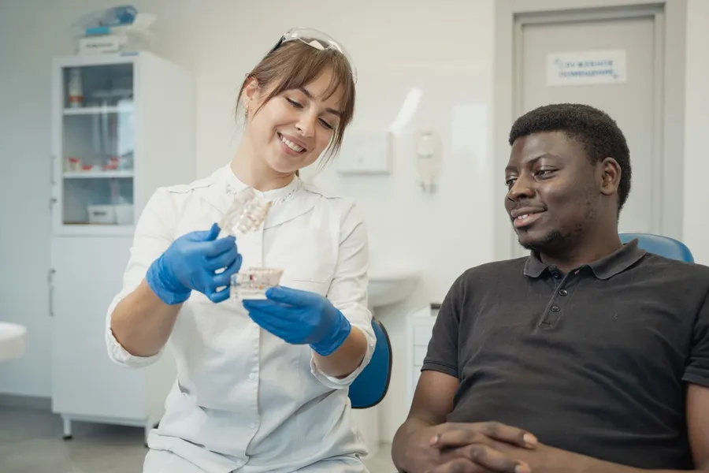
New patients are always welcome.
Not sure which one fits? Book a check-up and we will work it out together. The first consultation is free.
My tooth hurts
Tell us when it started and whether it wakes you at night. We hold same-day slots every morning and we see people in pain before routine appointments. The aim is to stop the pain first and plan the fix once you are comfortable.
from £8530 minutesEmergency appointment
I’m nervous
Plenty of our patients are. Book the check-up, tell us at the door and we will agree a hand signal so you can stop at any point. We explain everything before we do it, and nothing happens without your say-so. There is no telling-off for how long it has been.
from £5530 minutesCheck-up and clean
How much will it cost?
Every price is on its treatment page and in writing before we start, so there are no surprises on the day. If you mostly need a check-up and a clean, the £19 a month membership can work out cheaper. Our calculator tells you honestly when it does not.
I want a nicer smile
Whitening is done by your dentist, with trays made to fit you, and lifts teeth by up to eight shades. If crowding is what bothers you, clear aligners are the other route, and a check-up first tells you which one suits your teeth.
from £29060 minutesTeeth whitening
It’s for my child
A first visit is mostly looking, counting teeth and getting used to the chair. Your child can sit on your lap, hold the mirror and say no to anything. We keep a short chart of what brushing is working, and it goes home with you.
from £3525 minutesChildren’s dentistry
I’m missing a tooth
An implant replaces the root as well as the tooth, so it feels and works like your own. It takes several appointments over a few months, and a scan at the first one shows whether there is enough bone. We tell you the full price before you commit to anything.
from £220090 minutesDental implants
I just need a check-up
A thorough exam, X-rays only if they are useful, and a polish that lifts surface stains. We will tell you what is fine, what to keep an eye on and what needs treatment, with prices, in writing.
from £5530 minutesCheck-up and clean
Every price, up front.
All treatments| Treatment | Time | From |
|---|---|---|
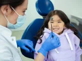 Children’s dentistryFriendly, relaxed visits that help children enjoy the dentist. | 25 min | £35 |
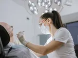 Check-up and cleanA thorough exam, X-rays if needed and a professional polish. | 30 min | £55 |
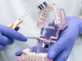 Hygienist visitA deep clean that removes plaque and tartar and keeps gums healthy. | 40 min | £70 |
| Emergency appointment Same-day help for toothache, broken teeth and swelling. | 30 min | £85 |
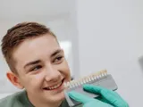 Teeth whiteningSafe, dentist-led whitening for up to eight shades brighter. | 60 min | £290 |
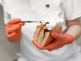 Root canal treatmentSaves a badly damaged tooth and ends the pain. | 75 min | £420 |
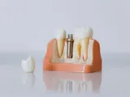 Dental implantsA permanent, natural-looking replacement for a missing tooth. | 90 min | £2200 |
| Clear aligners Near-invisible aligners to straighten teeth without wires. | 45 min | £2400 |
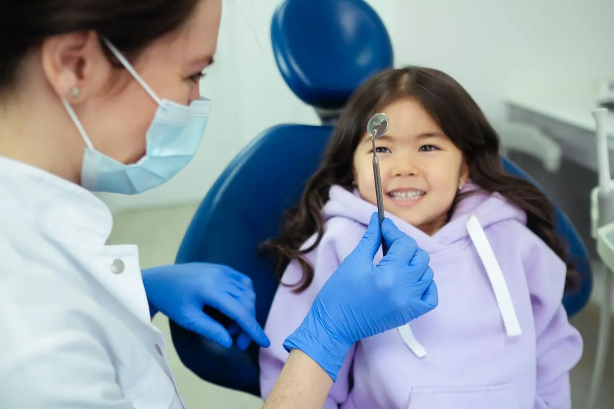
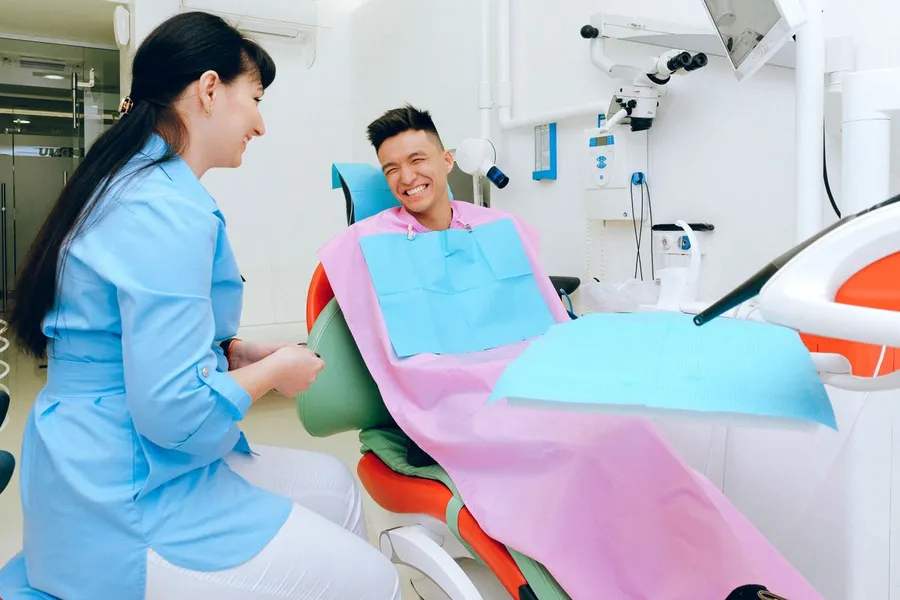
Your first visit, minute by minute.
The chat
We ask what is bothering you and we listen. Nobody touches a tooth yet.
The check
A gentle exam, X-rays only if they are useful, and a running explanation of what we see.
The plan
A written plan with prices. You decide what happens next, and when.
Friendly faces, steady hands.
Meet the team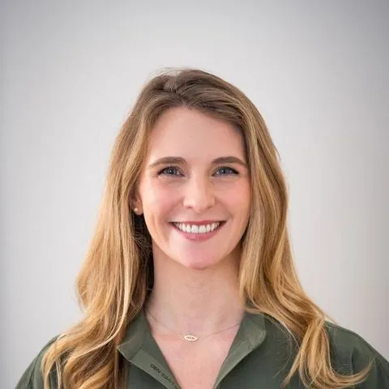
Dr Anna Bell
Principal dentist
General and cosmetic dentistry
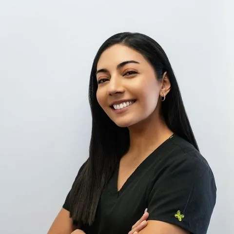
Dr Maya Lindgren
Family dentist
Children and family dentistry
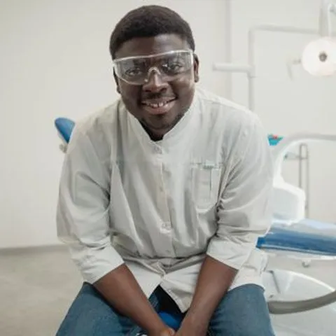
Dr Sam Okafor
Implant dentist
Implants and restorative care
Hannah Cole
Dental hygienist
Gum health and prevention
Kind words from patients.
“I have been terrified of dentists for twenty years. Dr Bell changed that in one visit.”
Mark T. · Check-up
“My daughter asks when we are going back. Honestly, that never happens.”
Chloe R. · Children’s visit
“Booked at 8am with toothache, seen by 10. Fixed and pain-free by lunch.”
Imran S. · Emergency
Ready when you are.
Book online in a minute. Free first consultation for new patients.